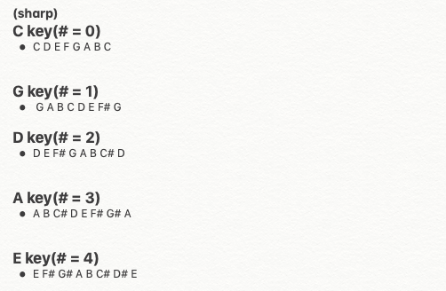
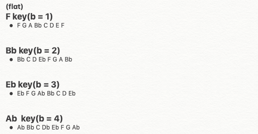
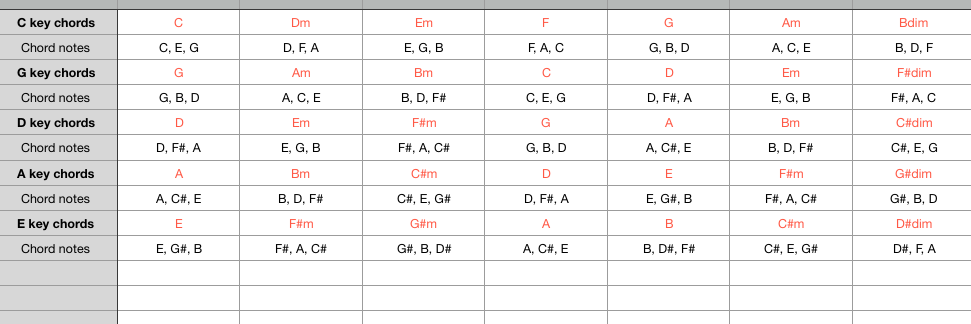
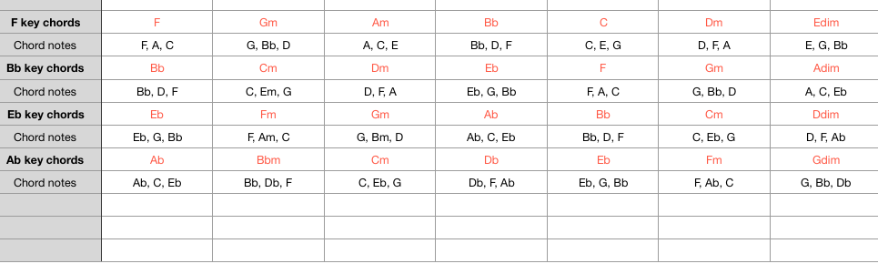
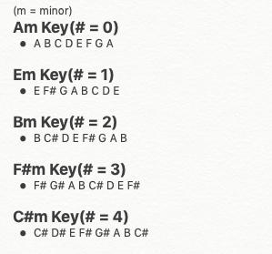
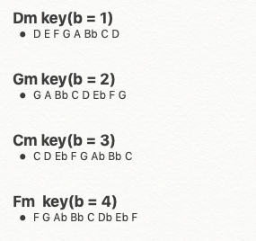
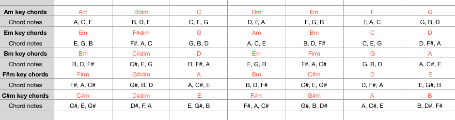
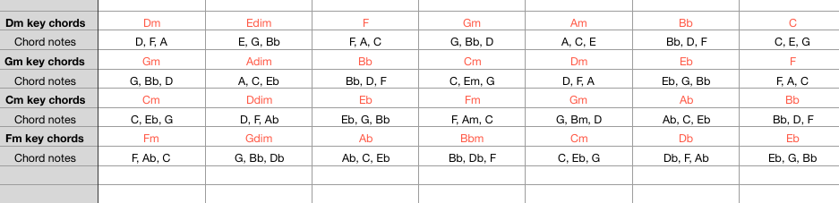

1. Key
Major Key
1) This is real basic Major harmonics using sharp.
2) You can use this notes in certain key.
3) Ex) If you selet C key in your song, then you can use these notes freely.(C D E F G A B C)
4) Ex) In E key, you can use these notes.(E F# G# A B C# D# E)
5) The rest are the same.

1) This is real basic harmonics using flat.
2) You can use this notes in certain key.
3) Ex) Likewise, In F key, you can use these notes.(F G A Bb C D E F)
4) Ex) In Eb key, you can use these notes.(Eb F G Ab Bb C D Eb)
5) The rest are the same.

1) In Major Key(#), I usually use these chords
2) Ex) In a C key, I usually use C, Dm, Em, F, G Am chords(I usually don't use dim chords)
3) Ex) In a E key, I usually use E, F#m, G#m, A, B, C#m chords(I usually don't use dim chords)
4) The rest are the same.

1) In Major Key(b), I usually use these chords
2) Ex) In a F key, I usually use F, Gm, Am Bb, C, Dm chords(I usually don't use dim chords)
3) Ex) In a Ab key, I usually use Ab, Bbm, Cm, Db, Eb, Fm chords(I usually don't use dim chords)
4) The rest are the same.

Minor Key
1) This is real basic minor harmonics using sharp.
2) You can use this notes in certain key.
3) Ex) If you selet Am key in your song, then you can use these notes freely.
(A B C D E F G A)
4) Ex) In C#m key, you can use these notes.
(C# D# E F# G# A B C#)
5) The rest are the same.

1) This is real basic minor harmonics using sharp.
2) You can use this notes in certain key.
3) Ex) If you selet Dm key in your song, then you can use these notes freely.
(D E F G A Bb C D)
4) Ex) In Fm key, you can use these notes.
(F G Ab Bb C Db Eb F)
5) The rest are the same.

1) In Minor Key(#), I usually use these chords
2) Ex) In a Am key, I usually use Am, C, Dm, Em, F, G chords
(I usually don't use dim chords)
3) Ex) In a C#m key, I usually use C#m, E, F#m, G#m, A, B chords
(I usually don't use dim chords)
4) The rest are the same.

1) In Minor Key(b), I usually use these chords
2) Ex) In a Dm key, I usually use Dm, F, Gm, Am, Bb C chords
(I usually don't use dim chords)
3) Ex) In a Fm key, I usually use Fm, Ab, Bbm, Cm, Db, Eb chords
(I usually don't use dim chords)
4) The rest are the same.

Add)
This is real basic of harmonics
so I hope you to memorize these keys, notes, chords,
I think these theory can help you analyze songs of other artists.
you can google it like ('songname chords')
if you want to study more, study tension chords, they will help you a lot!!
In short, (in C key) you can use every C, D, E, F, G, A, B notes in piano scale
And you can use C, Dm, Em, F, G, Am, Bdim chords!!
The details are on the next episode.